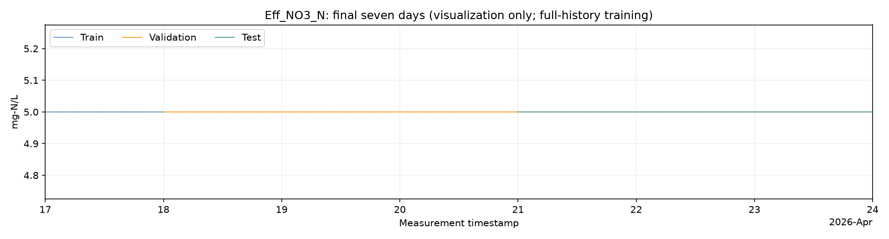
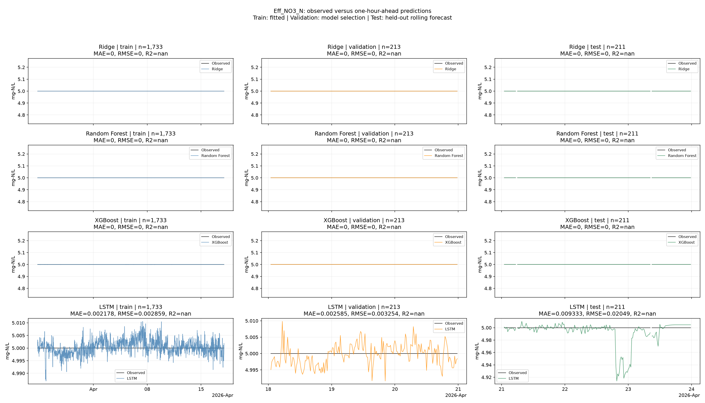
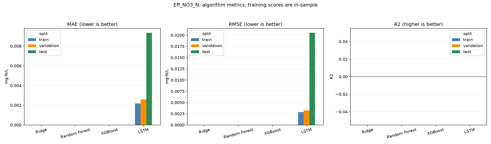

Train labels before 2026-04-18; validation labels before 2026-04-21; test origins from 2026-04-21. The split figure shows only the final seven days; training still uses all available earlier history. Test metrics never select models. R2 is undefined for constant labels. Recorded flows are predicted; this is not an operating recommendation.
| model | target | unit | algorithm | split | n | MAE | RMSE | R2 | constant_target |
|---|---|---|---|---|---|---|---|---|---|
| eff_no3_n | Eff_NO3_N | mg-N/L | Ridge | train | 1733 | 0.000000 | 0.000000 | undefined | True |
| eff_no3_n | Eff_NO3_N | mg-N/L | Ridge | validation | 213 | 0.000000 | 0.000000 | undefined | True |
| eff_no3_n | Eff_NO3_N | mg-N/L | Ridge | test | 211 | 0.000000 | 0.000000 | undefined | True |
| eff_no3_n | Eff_NO3_N | mg-N/L | Random Forest | train | 1733 | 0.000000 | 0.000000 | undefined | True |
| eff_no3_n | Eff_NO3_N | mg-N/L | Random Forest | validation | 213 | 0.000000 | 0.000000 | undefined | True |
| eff_no3_n | Eff_NO3_N | mg-N/L | Random Forest | test | 211 | 0.000000 | 0.000000 | undefined | True |
| eff_no3_n | Eff_NO3_N | mg-N/L | XGBoost | train | 1733 | 0.000000 | 0.000000 | undefined | True |
| eff_no3_n | Eff_NO3_N | mg-N/L | XGBoost | validation | 213 | 0.000000 | 0.000000 | undefined | True |
| eff_no3_n | Eff_NO3_N | mg-N/L | XGBoost | test | 211 | 0.000000 | 0.000000 | undefined | True |
| eff_no3_n | Eff_NO3_N | mg-N/L | LSTM | train | 1733 | 0.002178 | 0.002859 | undefined | True |
| eff_no3_n | Eff_NO3_N | mg-N/L | LSTM | validation | 213 | 0.002585 | 0.003254 | undefined | True |
| eff_no3_n | Eff_NO3_N | mg-N/L | LSTM | test | 211 | 0.009333 | 0.020488 | undefined | True |


